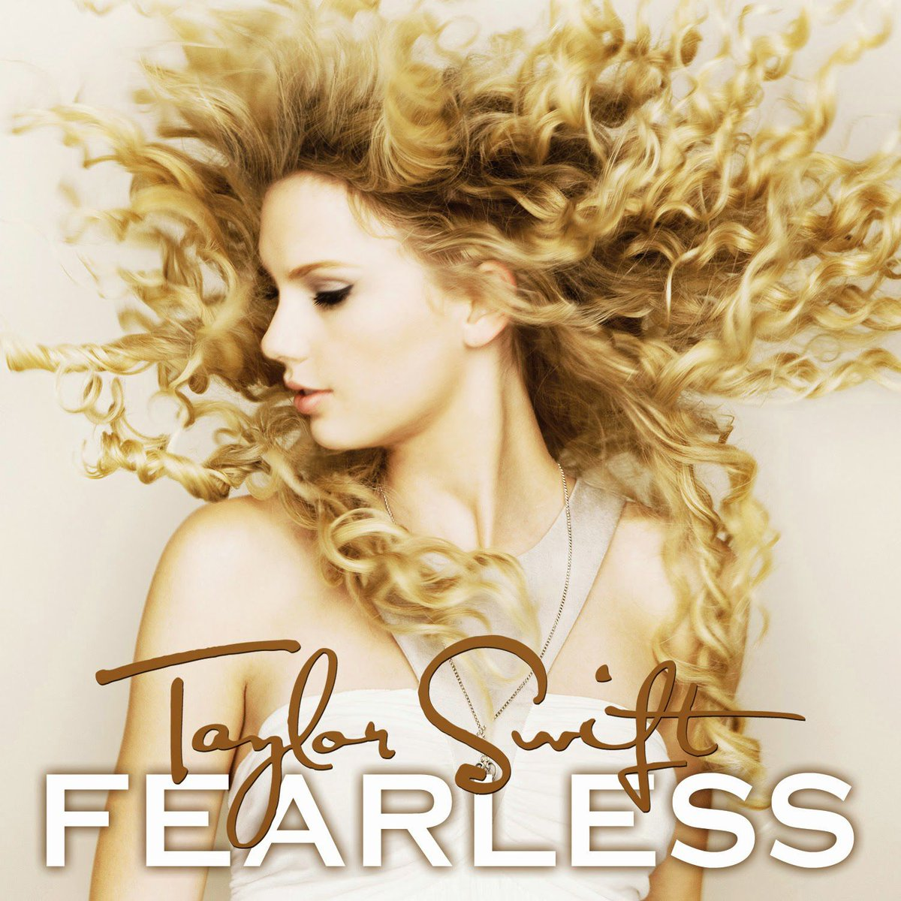
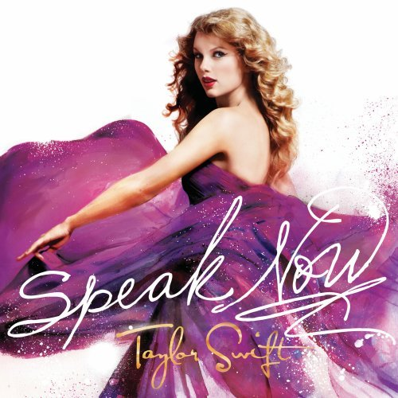

Canciónes y su historia
Taylor Swift
 ------------------------------
Publicado: 24 de Octubre 2006
Edad: 16 años
------------------------------
Publicado: 24 de Octubre 2006
Edad: 16 años
Fearless


------------------------------
Publicado: 11 de Noviembre 2008
Edad: 18
Speak Now
-----------------------------
Publicado: 25 de Octubre 2010
Edad: 20
RED

------------------------------
Publicado: 22 de Octubre 2012
Edad: 22
Canciónes:
Deluxe edition:
1989
------------------------------
Publicado: 27 de Octubre 2014
Edad: 24
Reputation
------------------------------
Publicado: 10 de Noviembre 2017
Edad: 27
Canciónes:
Lover

------------------------------
Publicado: 23 de Agosto 2019
Edad: 29
Canciónes:
folklore

------------------------------
Publicado: 24 de Julio 2020
Edad: 30
evermore

------------------------------
Publicado: 11 de Diciembre 2020
Edad: 30